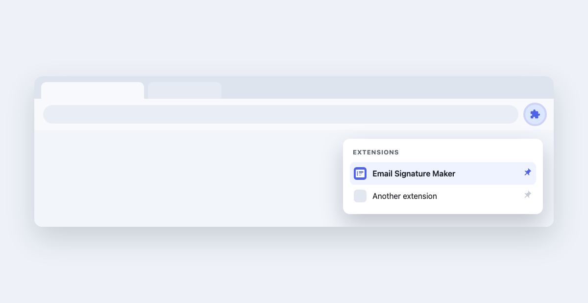
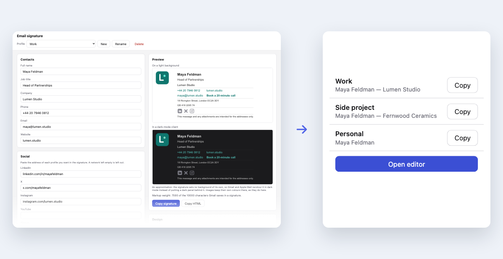

Email Signature Maker is installed
Two short steps and your signature is ready to paste.
1 Pin it to the toolbar

Chrome hides new extensions behind the puzzle icon. Click it, find Email Signature Maker in the list and click the pin, so your signature is always one click away.
2 Fill the form once, then copy

Open the editor and enter your name, job title, phone and links. Pick a layout, set your brand colour, then press Copy signature and paste it into the signature box in Gmail, Outlook or any other mail client. Everything stays in your browser — no account, no upload.
Need a second signature for a side project? Create another profile — the popup copies whichever one you need.